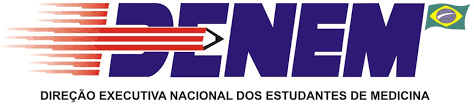
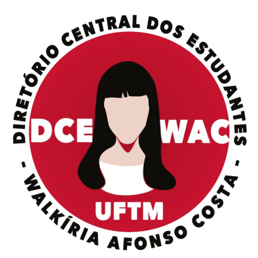
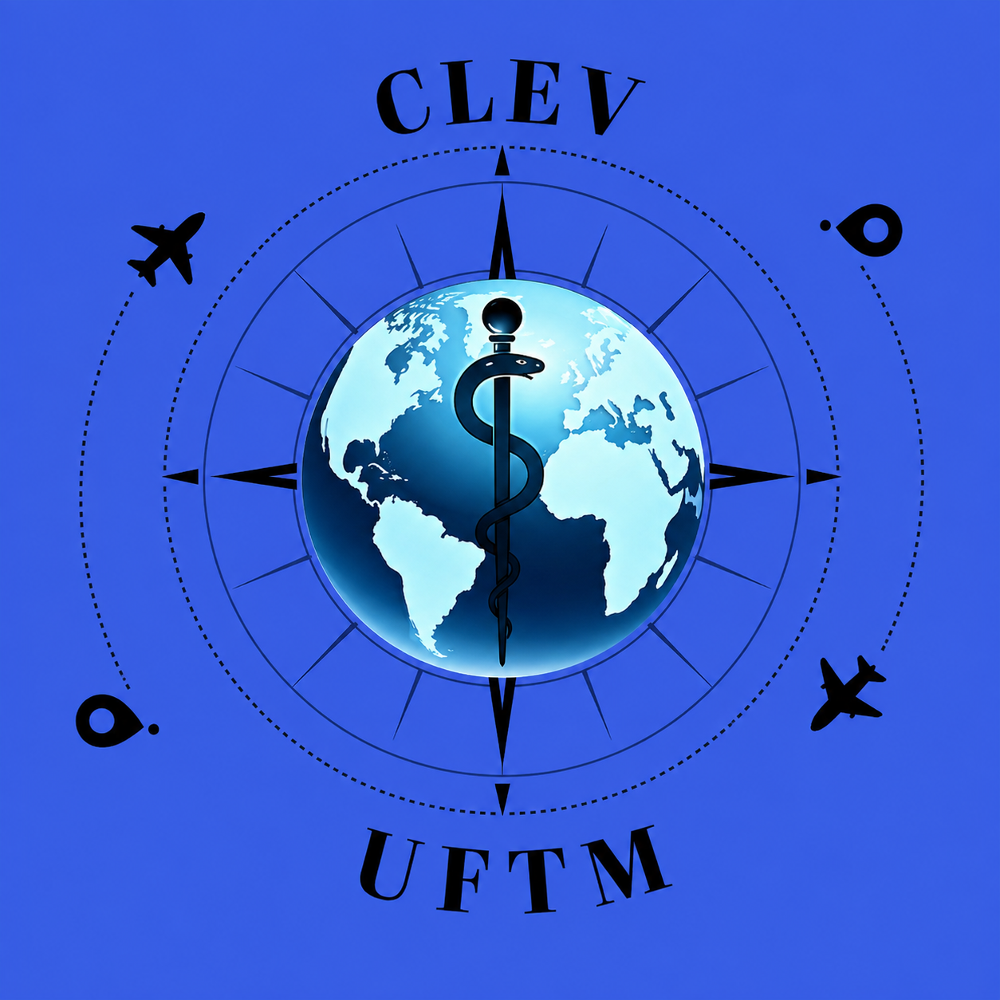

Representações Acadêmicas
Conheça as entidades que representam os estudantes de Medicina da UFTM em âmbito nacional, universitário e local.
DENEM
Direção Executiva Nacional dos Estudantes de Medicina

O Movimento Estudantil da Medicina também está presente para além dos muros da nossa Universidade. O DAGV da UFTM é representado pela DENEM, compondo a Regional Sudeste-2.
Fundada em 1986, em Fortaleza, durante o XVII Encontro Científico dos Estudantes de Medicina (ECEM), a DENEM é a entidade representativa dos estudantes de medicina em nível nacional, com décadas de lutas e mobilizações — da defesa da educação médica à defesa do SUS público, equânime e de qualidade.
Para facilitar o diálogo com os Centros e Diretórios Acadêmicos, a DENEM se organiza em 8 regionais, além de uma sede nacional e do CENEPES (Centro de Pesquisas e Estudos em Educação e Saúde). A participação democrática acontece em fóruns como o ECEM, o COBREM, o ROEX, as Reuniões de Regional e os EREMs.
Ver regionais, CENEPES e fóruns de decisão
As 8 regionais e os estados que as compõem: Norte (AC, AM, RR, RO, PA, AP e MA); Nordeste-1 (BA, SE e AL); Nordeste-2 (PI, CE, RN, PB e PE); Centro-Oeste (MT, MS, GO, TO e DF); Sudeste-1 (RJ e ES); Sudeste-2 (MG — nossa regional); Sul-1 (SC e RS); e Sul-2 (PR e SP). Cada regional tem uma coordenação responsável por visitar as Coordenações Locais (CL's — Centros e Diretórios Acadêmicos) e organizar os encontros estudantis regionais.
Além da coordenação nacional (sede + coordenações de regionais + relações exteriores), a DENEM conta com o CENEPES, formado por coordenações de área:
- Coordenação de Políticas de Saúde (CPS)
- Coordenação de Educação (CoE)
- Coordenação de Extensão Universitária (CExU)
- Coordenação de Cultura e Meio Ambiente (CoCultMa)
- Coordenação Científica (CoCien)
- Coordenação de Estágios e Vivências (CEV)
- ECEM — Encontro Científico dos Estudantes de Medicina
- Maior fórum deliberativo da entidade, com voz e voto a todo estudante inscrito. Acontece em meados de julho.
- COBREM — Congresso Brasileiro dos Estudantes de Medicina
- Segundo maior espaço deliberativo, com voto dos delegados eleitos por curso. É onde se planeja o ano da Executiva, em meados de janeiro.
- ROEX — Reunião dos Órgãos Executivos (CA's e DA's)
- Terceiro maior espaço deliberativo, um voto por CA/DA. Acontecem várias ao longo do ano.
- RR — Reunião de Regional
- Espaço deliberativo em nível regional, um voto por CA/DA.
- EREM — Encontro Regional dos Estudantes de Medicina
- Maior espaço deliberativo em nível regional, com voz e voto a todo estudante na plenária final.
Quem quiser ajudar a construir a DENEM pode compor a Rede de Ajuda (RA), que recruta estudantes voluntários a cada início de gestão.
DCE UFTM
Diretório Central dos Estudantes "Walkíria Afonso Costa"

O DCE (Diretório Central dos Estudantes) é a entidade máxima representativa de todas e todos os estudantes de uma instituição de ensino superior — um espaço de disputas democráticas em defesa dos interesses da categoria estudantil.
O DCE da UFTM, batizado DCE-WAC, é uma associação civil sem fins econômicos, de duração indeterminada, regida pelo estatuto aprovado em assembleia em 2015, e é o órgão de representação máxima dos estudantes de graduação, pós-graduação e nível técnico da UFTM.
Quem foi Walkíria Afonso Costa? Uberabense, nascida em 1947, foi estudante de pedagogia na UFMG e militante do movimento estudantil — fundou, com companheiros, o Diretório Acadêmico da Faculdade de Educação em 1968. Durante a Ditadura Militar, sua faculdade foi cercada e colegas foram torturados e presos; Walkíria entrou para a clandestinidade e, em 1971, mudou-se com seu companheiro para a região do Araguaia (sul do Pará), onde alfabetizavam, lecionavam e prestavam socorro médico a camponeses.
Integrante do Destacamento B na Guerrilha do Araguaia, foi uma das últimas guerrilheiras a ser presa pelo Exército — após meses de fuga, em dezembro de 1973, foi levada de helicóptero à base militar de Xambioá, torturada e executada aos 27 anos. Como dezenas de outros militantes, seus restos mortais nunca foram entregues à família. Seu nome representa, até hoje, o compromisso do movimento estudantil com a classe trabalhadora e sua emancipação.
Ver princípios e finalidades do DCE-WAC
- Representar seus membros no âmbito da UFTM, defendendo os interesses do conjunto, sem distinção de raça, cor, religião, nacionalidade, sexo, idade ou convicção política;
- Lutar pela construção de uma universidade popular, pública, gratuita, democrática e de qualidade, voltada aos interesses da população, na UFTM e no Brasil;
- Organizar e incentivar promoções de caráter político, cultural, científico e social que aprimorem a formação profissional e pessoal;
- Repudiar todas as formas de opressão e exploração dentro e fora da universidade;
- Lutar por políticas que garantam a permanência e a conclusão de curso dos estudantes;
- Promover a efetiva ocupação das vagas discentes nos órgãos colegiados da UFTM;
- Defender a paridade da participação estudantil nos órgãos colegiados;
- Atender, sempre que possível, às demandas da classe trabalhadora e de suas organizações;
- Defender, em todo debate sobre educação, os princípios da autonomia universitária, gestão democrática e indissociabilidade entre ensino, pesquisa e extensão;
- Combater o arbítrio, o autoritarismo e o uso de recursos públicos para interesses privados na UFTM e na educação pública brasileira;
- Preservar e estimular o patrimônio artístico, científico e cultural dos estudantes da UFTM.
CLEV
Coordenação Local de Estágios e Vivências

A Coordenação Local de Estágios e Vivências (CLEV) é a representação local da Coordenação de Estágios e Vivências (CEV), constituindo uma das ramificações da DENEM em nível de universidade. É formada por estudantes de Medicina e, no caso da CLEV-UFTM, seus membros são selecionados por meio de um processo seletivo anual.
As CLEVs proporcionam aos estudantes a ampliação de conhecimentos técnico-científicos por meio da articulação e organização de estágios e intercâmbios, promovendo o contato com diferentes sistemas de saúde ao redor do mundo e o encontro com outras culturas, línguas e realidades.
Como funciona
O objetivo é alcançado por meio da divulgação de editais anuais, oficinas de capacitação, organização de eventos em parceria com o Diretório Acadêmico ou outras CLEVs, e auxílio na resolução de dúvidas sobre as etapas do processo.
Os estágios articulados pela CLEV, pela CEV e pela DENEM podem ocorrer em nível nacional ou internacional, no local de preferência do estudante, geralmente com duração de quatro semanas. A participação ocorre após seleção nos respectivos editais e mediante o pagamento da taxa estabelecida.
CVU Uberaba
Centro de Voluntariado Universitário
O Centro de Voluntariado Universitário (CVU) é um espaço em que a vontade de ajudar se transforma em ações concretas. Formado por estudantes que acreditam que a universidade vai além da sala de aula, o CVU promove iniciativas que reforçam o impacto social, a responsabilidade e o compromisso com a comunidade.
Entre suas principais atividades estão a organização de ações solidárias, campanhas, projetos sociais e visitas a instituições. O objetivo é conectar estudantes a causas que realmente necessitam de apoio, gerando impacto tanto dentro quanto fora do ambiente universitário. As ações desenvolvidas pelo CVU frequentemente apoiam instituições como a ONG Mãos Amigas, o Centro Cultural de Capoeira Águia Branca, o Instituto Madre Teresa de Calcutá, o Lar André Luiz e o Instituto da Hemodiálise de Uberaba — cada iniciativa é planejada a partir da escuta das necessidades dessas instituições e da motivação dos voluntários em contribuir de forma significativa.
Ver diretorias e processo seletivo
Para organizar suas atividades, o CVU é estruturado em diferentes diretorias, cada uma com coordenadores e um ou dois diretores responsáveis por conduzir as demandas específicas de sua área:
- Administrativa/Financeira
- Responsável pela organização interna e pela gestão de recursos.
- Consultoria Social
- Atua na articulação das ações e no contato com as instituições.
- Cultura
- Desenvolve eventos e iniciativas culturais com impacto social.
- Marketing
- Cuida da divulgação e da comunicação.
- Relacionamento
- Fortalece parcerias e o vínculo com os voluntários.
- Gestão de Pessoas
- Trabalha na integração e no cuidado com os membros da equipe.
- Executivo
- Formado pelo presidente e pelo vice-presidente, coordena as atividades para garantir o funcionamento alinhado e estruturado da organização.
Para fazer parte do CVU, os interessados devem participar de um processo seletivo realizado semestralmente, com dias de dinâmicas em grupo nas quais são avaliadas habilidades como trabalho em equipe, considerada essencial para a atuação dentro do projeto.